Many applications, such as fringe projection [1] or fringe reflection (deflectometry) [2],
require the ability to encode positional data.
To do this, sinusoidal fringe patterns are used to encode the position on the screen (in pixel coordinates)
at which the camera pixels were looking at during acquisition.
In the following, the coding is discussed for the horizontal direction only.
However, the procedure is analogous in the vertical direction.
The x- resp. y-coordinate 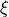 of the screen is normalized into the range 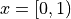
by dividing through the pattern length 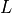 and used to modulate the radiance in a sinusoidal fringe pattern 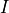
with offset , amplitude and spatial frequency 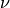.
An additional phase offset 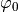 may be set to e.g. let the fringe patterns start with a gray value of zero.
There can be sets, i.e. fringe patterns with different spatial frequency 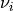,
with 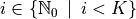.
Temporal Modulation
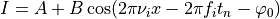
The patterns are then shifted 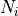 times with an equidistant phase shift of 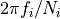.
This is equal to sampling over 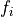 periods with sample points
at time steps 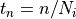, with 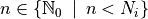.
Decoding
Temporal Demodulation
From these shifts, the phase maps 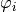 are determined [3].
Due to the trigonometric functions used, the global phase 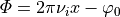
is wrapped into the interval 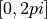 with periods:
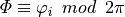
Spatial Demodulation (Phase Unwrapping)
To obtain the encoded coordinate , three tasks must be executed:
i Undo the spatial modulation
by finding the correct period order number
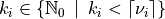 for each set .
The global phase is then estimated to be 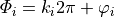.
ii Recover the common independent variable 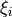
by linearly rescaling the global phase map:
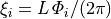, with being the pattern length (in pixels).
iii Fuse the coordinate maps
by weighted averaging:
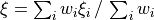.
To obtain an optimal estimate, use inverse variance weighting,
i.e. use the inverse variances of the coordinate maps as the weights for averaging:
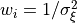, with 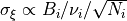 [4].
This constitutes the registration, which is a mapping in the same pixel grid as the camera sensor
and contains the information where each camera pixel, i.e. each camera sightray, was looking at
during the fringe pattern acquisition.
Note that in contrast to binary coding schemes, e.g. Gray code, the coordinate is obtained with sub-pixel precision.
No Unwrapping
If only one set 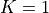 with spatial frequency 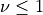 is used, no unwrapping is required,
because one period covers the complete coding range. In this case, only the scaling part (ii) has to be executed.
Temporal Phase Unwrapping (TPU)
If multiple sets with different spatial frequencies are used,
and the unambiguous measurement range 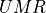 is larger than the screen length ,
the ambiguity of the phase map is resolved by generalized multi-frequency temporal phase unwrapping (GTPU).
Spatial Phase Unwrapping (SPU)
However, if only one set with 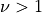 is used, or multiple sets but 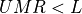,
the ambiguous phase 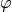 is unwrapped by analyzing phase values in the spatial neighbourhood [5], [6].
This only yields a relative phase map, therefore absolute positions are unknown.
Fourier-transform method (FTM)
If only a single frame is recorded, the phase signal introduced by the object’s distortion of the fringe pattern
can be extracted with a purely spatial analysis by virtue of the Fourier-transform method [7], [8]:
The recorded phase consists of a carrier with the spatial frequency 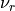
(note that denotes the spatial frequency in the recorded camera frame,
therefore and are related by the imaging of the optical system but not identical):
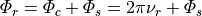.
If the offset , the amplitude anf the signal phase 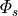 vary slowly
compared with the variation introduced by the spatial-carrier frequency ,
i.e. the surface is rather smooth and has no sharp edges,
and the spatial carrier frequency is high enough, i.e. 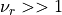,
their spetra can be separated and therefore filtered in frequency space.
For this purpose, the recorded fringe pattern is Fourier transformed
by the use of the two-dimensional fast-Fourier-transform (2DFFT) algorithm - hence the name -
and processed in its spatial frequency domain.
Here, the Fourier spectra are separated by the carrier frequency , as can be seen in the next Figure.
We filter out the background variation , select either of the two spectra on the carrier,
and translate it by on the frequency axis toward the origin.
Again using the 2DFFT algorithm, we compute the inverse Fourier-transform.
Now we have the signal phase in the imaginary part
completely separated from the unwanted amplitude variation in the real part.
Subsequently, a spatial phase-unwrapping algorithm may be deployed to remove any remaining phase jumps.
This phase unwrapping method is not critical if the signal-to-noise ratio is higher than 10
and the gradients of the signal phase are less than per pixel.
Again, this only yields a relative phase map, therefore absolute positions are unknown.
In this image, the spatial frequency is denoted as f.
(A) Separated Fourier spectra; (B) single spectrum selected and translated to the origin.
From [7].
In an alternative formulation, the absolute quantities offset and amplitude
are replaced by the maximal possible gray value 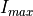
and the relative quantities exposure (relative average intensity) and visibilty (relative fringe contrast) [9]:
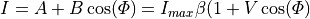
The two parameters and describe the phase shifting signal
independently of the value range of the light source or camera.
Both lie within the interval 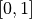 with the additional condition 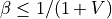;
else, the radiance of the light source would be higher than the maximal possible value .
Therefore, the valid values are limited for 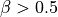.
The optimal fringe contrast is achieved for 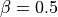 and 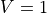.
The advantage of this representation is the normalization of the descriptive parameters and
and thereby the separation of additive and multiplicative influences.
The exposure is affected by additional, constant light (not modulating the signal):
the maximum brightness of the light source,
the exposure time and the aperture setting of the camera,
the absorption of optical elements (e.g. filters).
The visibility of the fringes is influenced by:
the maximum contrast of the light source,
the modulation transfer function of the optical elements (e.g. the scattering characteristics of the test object),
the depth of field and defocus,
the resolution of the camera
(the camera pixel size projected onto the light source acts as a low pass filter,
reducing the modulation of the signal).
 , amplitude
, amplitude  and spatial frequency 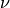.
An additional phase offset 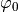 may be set to e.g. let the fringe patterns start with a gray value of zero.
There can be
and spatial frequency 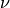.
An additional phase offset 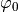 may be set to e.g. let the fringe patterns start with a gray value of zero.
There can be  sets, i.e.
sets, i.e.  .
The global phase is then estimated to be 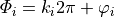.
.
The global phase is then estimated to be 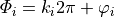. per pixel.
Again, this only yields a relative phase map, therefore absolute positions are unknown.
per pixel.
Again, this only yields a relative phase map, therefore absolute positions are unknown.{kind=link}
 and visibilty (relative fringe contrast)
and visibilty (relative fringe contrast)  [9]:
[9]:{kind=link}